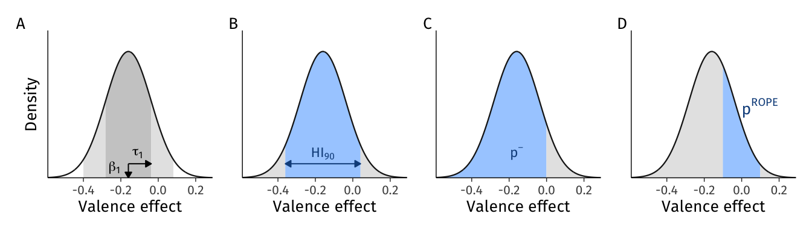

![]()
| Person | Trial | Valence | Log(reaction time) |
|---|---|---|---|
| 01 | 1 | Negative | 6.7 |
| 01 | 8 | Positive | 6.7 |
| 01 | 10 | Positive | 6.9 |
| 01 | 12 | Negative | 6.7 |
| 01 | 13 | Negative | 6.7 |
| 01 | 14 | Positive | 6.7 |
Communicating causal effect heterogeneity
Abstract
Advances in experimental, data collection, and analysis methods have brought population variability in psychological phenomena to the fore. Yet, current practices for interpreting such heterogeneity do not appropriately treat the uncertainty inevitable in any statistical summary. Heterogeneity is best thought of as a distribution of features with a mean (average person’s effect) and variance (between-person differences). This expected heterogeneity distribution can be further summarized e.g. as a heterogeneity interval (Bolger et al., 2019). However, because empirical studies estimate the underlying mean and variance parameters with uncertainty, the expected distribution and interval will underestimate the actual range of plausible effects in the population. Using Bayesian hierarchical models, and with the aid of empirical datasets from social and cognitive psychology, we provide a walk-through of effective heterogeneity reporting and display tools that appropriately convey measures of uncertainty. We cover interval, proportion, and ratio measures of heterogeneity and their estimation and interpretation. These tools can be a spur to theory building, allowing researchers to widen their focus from population averages to population heterogeneity in psychological phenomena.
Keywords
heterogeneity, uncertainty, variation, hierarchical model, statistics
When building and testing theories, psychologists have long focused on asking whether an effect exists and what its magnitude might be. Yet, establishing that an independent variable affects a dependent variable, possibly to some specific extent, may not be a sufficient description of the phenomenon if the effect varies appreciably from one treatment unit (e.g. person) to another. The relevance of such variation in the effect, or heterogeneity, for theory development is recognized yet typically insufficiently described in the empirical literature (Bolger et al., 2019; Brand & Thomas, 2013; Grice et al., 2020; Richters, 2021).
One reason for the scarcity of reporting and sufficiently interpreting heterogeneity is that psychologists still commonly analyze data with models that obscure its assessment, such as traditional ANOVA (Bolger et al., 2019). However, more informative modeling is not the only challenge: Although more informative hierarchical (or multilevel, mixed-effects (Gelman & Hill, 2007)) models are becoming widespread, many users do not yet have the conceptual and practical tools to benefit from the greater explanatory power such models afford.
When person-to-person variability is modeled and reported, those descriptions often focus on point estimates (Bolger et al., 2019), sample statistics (Beyens et al., 2020; Grice et al., 2020; Vuorre et al., 2022), graphical displays that don’t yield numerical estimates of hypothetical data-generating mechanisms (Beck & Jackson, 2022), or quantities such as the standard deviation of person-specific parameters (Bartoš et al., 2023). These, as we will show, provide an incomplete picture of variation that is sometimes difficult to interpret: If (e.g.) a treatment effect is found for 60% or participants in a sample but the uncertainty inherent in that percentage is not communicated, we cannot make inferential conclusions about the effect’s prevalence in the population. Therefore, to communicate heterogeneity effectively we need not only meaningful measures of it, but also effective methods for describing the associated uncertainties. Our goal in this paper is to address this challenge by illustrating measures of heterogeneity and how to communicate them, both numerically and graphically, in ways that take uncertainty into account.
Our plan is as follows. First, we review established methods for estimating and communicating expected heterogeneity of causal effects in the population using an example dataset from social psychology. We then describe additional ways in which model parameters can be transformed to describe distributions of causal effects. We review the concepts and computations underlying three heterogeneity metrics: The effect’s mean and standard deviation in the population; the heterogeneity interval; and the prevalence proportion. Second, we move beyond summarizing expected degrees of heterogeneity that lack information about uncertainty to describing distributions of plausible degrees of heterogeneity. Such uncertainty distributions of population feature distributions are natural components of Bayesian hierarchical models and afford efficient tools for describing distributional uncertainty. Finally, we extend these methods to compare heterogeneity across different populations using an example dataset from cognitive psychology.
Review of heterogeneity
To begin our exposition, we reproduce the analyses presented in Bolger et al. (2019). In their study, which replicated findings first presented in Scholer et al. (2014), 62 participants saw twenty positively and twenty negatively valenced words, and judged whether each word was self-descriptive or not. Because most people are typically motivated to view themselves positively, Bolger et al. (2019) predicted that responses to positively valenced words would be faster than to negatively valenced words (Scholer et al., 2014).
Model 1
In this section, we replicate Bolger et al. (2019)’s analysis, using their openly available data. We first wrangled the data as in Bolger et al. (2019), which led to a sample of 1,321 trials from 59 participants that were endorsed as self-descriptive. Our online analysis supplement (https://osf.io/yp2gq) includes the complete code to reproduce this manuscript and computations therein. We show a sample of these data in Table 1.
Then, we estimated the same statistical model (Equation 1 - 3). We modeled the log-transformed reaction time of person \(j\) on trial \(i\) as a random draw from a normal distribution with mean \(\eta\) (eta), which could differ between trials \(i\) and individuals \(j\), and standard deviation \(\sigma\) (sigma), which we assumed constant across individuals and trials as indicated by the lack of subscripts:
\[ \text{logRT}_{ij} \sim \operatorname{Normal}\left(\eta_{ij}, \sigma^2\right). \tag{1}\]
(We recognize that there are better alternatives to modeling the log-transformed RTs as normal, but those are outside the scope of this manuscript.) Then, we specified a model of the mean of the logRT distribution (\(\eta_{ij}\)) such that the regression coefficients captured our substantive questions:
\[ \eta_{ij} = \beta_0 + \gamma_{0j} + \left(\beta_1 + \gamma_{1j}\right)\text{V}_{ij}. \tag{2}\]
This equation includes two sets of parameters: The first set contains \(\beta_0\) (beta), the intercept, and \(\beta_1\), the slope or effect of valence (V). Parameters in this set do not have subscripts: In the frequentist tradition, they are considered constants—not modelled on covariates—and typically referred to as “fixed” parameters (e.g. Raudenbush & Bryk, 2002). The second set of parameters, \(\gamma_{0j}\) (gamma) and \(\gamma_{1j}\), have the subscript \(j\) to indicate that they are person-specific deviations from the average intercept and slope, respectively. That is, \(\beta_0 + \gamma_{01}\) is the intercept (average reaction time) for person \(j=1\). In frequentist texts, these are typically called “random” parameters because they are modeled as varying randomly according to a specified distribution. Following standard multilevel modeling assumptions, we model \(\gamma_0\) and \(\gamma_1\) as multivariate normal distributed:
\[ \begin{bmatrix} \gamma_0 \\ \gamma_1 \end{bmatrix} \sim \operatorname{MVN}\left( \begin{bmatrix} 0 \\ 0 \end{bmatrix}, \begin{pmatrix} \tau_0 & \\ \rho &\tau_1 \end{pmatrix} \right). \tag{3}\]
In this equation, we assume that the person-specific deviations \(\gamma_0\) and \(\gamma_1\) have means of zero (because the means are added to them in equation 1.2), standard deviations \(\tau\) (tau), and a correlation \(\rho\) (rho). Perhaps confusingly, \(\tau\)s and \(\rho\) are also sometimes called random effects because they describe random (co)variations of the person-specific effects. To be clear, despite this naming convention they are features of the population, not of any one group or individual.
What these equations mean substantively is that the extent to which the effect of valence on logRT varies around the average effect (\(\beta_1\)) is estimated by the standard deviation \(\tau_1\). \(\tau_0\), on the other hand, describes the standard deviation of the population of individuals’ average logRTs across negatively and positively valenced words (intercepts). Moreover, \(\rho\) indicates the extent to which individuals’ average logRTs correlate with how much their logRTs are affected by valence.
Finally, we contrast coded valence such that negative words were assigned -0.5, and positive words 0.5. This coding results in an intercept that corresponds to the average reaction time across negative and positive words, and a slope that reflects the difference in logRT between negative and positive words.
With data shown in Table 1, we can estimate this model using standard (restricted) maximum likelihood methods as implemented in, for example, the R package lme4 (Bates et al., 2015; R Core Team, 2024).
| Parameter | Coefficient | SE | 95% CI |
|---|---|---|---|
| \(\beta_0\) | 6.87 | 0.02 | [6.82, 6.91] |
| \(\beta_1\) | -0.16 | 0.02 | [-0.20, -0.12] |
| \(\tau_0\) | 0.17 | 0.02 | [0.13, 0.20] |
| \(\tau_1\) | 0.12 | 0.02 | [0.08, 0.16] |
| \(\rho\) | -0.07 | 0.21 | [-0.45, 0.35] |
| \(\sigma\) | 0.24 | 0.01 | [0.24, 0.25] |
We show a conventional summary of this model’s estimated parameters in Table 2. For the average person, the estimated effect of positive valence on logRT is -0.16 log seconds, with a 95% confidence interval (CI) extending from -0.20 to -0.12. The estimated standard deviation of valence effects in the population is 0.12 log seconds. The lme4 software package does not report a standard error or CI for (co)variance parameters by default, and we therefore calculated it by bootstrapping. The resulting 95% bootstrap CI of the valence effect’s standard deviation was [0.08, 0.16].
Heterogeneity distribution at maximum likelihood estimate of \(\beta_1\) and \(\tau_1\)

Rows 2 and 4 in Table 2 define the expected normal distribution of valence effects in the population, visualized in Figure 1 A. In other words, our point estimate of the distribution of valence effects is Normal(-0.16, 0.122). However, this distribution is an incomplete description of heterogeneity for two reasons. First, it does not incorporate uncertainty in the two determinants of heterogeneity, that is \(\beta_1\) and \(\tau_1\): If they are precisely estimated, i.e. when uncertainty regarding them is negligible, the distribution and any quantities calculated from it characterize the population well. On the other hand, if they are estimated with considerable uncertainty, the distribution or its transformations would not characterize the population well. We return to this key issue below. Second, the distribution or its parameters do not, for many purposes, communicate heterogeneity in clear and actionable terms. Below, we introduce several metrics that directly describe e.g. where a given proportion of the slopes are expected to fall.
Interval descriptors
First, we can use the point estimates in Table 2 to construct an expected heterogeneity interval that describes the range within which a certain percentage of the population’s slopes are expected to fall (Bolger et al., 2019). To do so, we must first determine an appropriate percentage to describe: By convention, Bolger et al. (2019) and others have focused on the 95% heterogeneity interval (\(HI_{95}\)). However, because there are already confusingly many quantities using the five percent cutoff, in this manuscript we focus on the 90% heterogeneity interval, and reserve 95% to describing uncertainties. The appropriate percentage to describe with a heterogeneity interval is determined by the substantive and communicative aims at hand; for our illustration 90% seemed reasonable.
To calculate a heterogeneity interval, we first specify the desired probability limits. For a 90% interval, we use .05 and .95, which together define the central 90% of the distribution. Then, we pass those limits and the estimated mean and standard deviation to the normal quantile function \(\Phi^{-1}\) (phi, qnorm() in R), to get the interval: \(HI_{90} = \Phi^{-1}([.05, .95], \beta_1, \tau_1) = \Phi^{-1}([.05, .95],\) -0.16, 0.12) = [-0.36, 0.04]. In words, this function calculates the 0.05 and 0.95 quantiles of the normal distribution defined by the mean’s (\(\beta_1\)) and standard deviation’s (\(\tau_1\)) point estimates: We expect 90% of valence effects in the population to fall in the [-0.36, 0.04] interval. We illustrate this interval in Figure 1 B.
Proportion descriptors
The above HI summarizes where a given proportion of individuals’ effects in the population are. In contrast, some applications might find it more informative to summarize proportions of effects above or below some critical value, or within some critical range. For example, we might ask “What proportion of individuals in the population respond faster to positively valenced words?” In other words, we ask a question of prevalence: What proportion of the heterogeneity distribution is below zero? We label this quantity \(p^-\) for proportion of population with negative effects.
To answer, we pass zero (the critical value) and the estimated mean and standard deviation to the normal cumulative distribution function (\(\Phi\); pnorm() in R): \(p^- = \Phi(0, \beta_1, \tau_1) = \Phi(0,\) -0.16, 0.12) = 90.4%. This number is the probability that a random slope from this population would take a negative value, or, in other words, the proportion of individuals in the population with negative valence effects. We illustrate this probability in Figure 1 C.
However, using zero as a critical value might not be sufficiently informative, especially when theory allows specifying a smallest effect size of interest, or what is known as a region of practical equivalence (ROPE, Anvari & Lakens, 2021; Kruschke, 2014; Kruschke & Liddell, 2017; Lakens et al., 2018). In common applications, ROPE is used to statistically infer whether an estimated parameter, such as the effect of valence on logRT for the average person, is practically significant. But we can equally well use a theory-informed region of effect sizes to describe and make inferences about the heterogeneity distribution of this effect in the population.
For example, let us imagine that a theory states that valence effects in the interval [-0.1, 0.1] are practically equivalent to zero. To calculate, we can again use the normal cumulative distribution function to calculate the proportion of individuals in the population whose valence effect falls within this interval or region of practical equivalence: \(p^{ROPE} = \Phi(0.1, \beta_1, \tau_1) - \Phi(-0.1, \beta_1, \tau_1)\) = 29.6%. In words, 29.6% of the population is expected to have valence effects that are practically equivalent to zero. Note that this statement’s validity critically depends on the chosen interval’s theoretical validity. We visualize this probability in Figure 1 D.
Ratio descriptors
Although the interval and proportion descriptors describe where the population’s slopes are likely to fall, they do so in absolute terms such as logRT in the running example. A contrasting or relative way to describe heterogeneity is to express it as a ratio of the effect’s standard deviation to its mean. Such relative metrics are concise and can be useful especially when the absolute units are difficult to interpret, or when comparing heterogeneity across different populations or experimental conditions (see below). This ratio, expressed simply as the fraction \(\frac{\tau_1}{\beta_1}\) is 0.77 in the current example.
(Bolger et al., 2019, p. 609) suggest as a rule of thumb that heterogeneity can be deemed noteworthy when the ratio of the standard deviation to the average effect is 0.25 or greater: A ratio greater than 1/4 implies a \(HI_{95}\) whose limits extend to effects one-half and one-and-a-half times that of the average effect. With these data and model, the ratio \(\frac{\tau_1}{\beta_1}\) is 0.77, suggesting that the degree of heterogeneity in valence effects is noteworthy. While this heuristic can sometimes be useful, we urge users to apply domain-specific knowledge when considering critical values or thresholds whenever possible.
Missing uncertainty
The expected normal distribution of valence effects and its transformations (Figure 1) ignore uncertainty inherent in the estimated parameters. That is, we calculated \(HI_{90}\), \(p^-\), and the other heterogeneity measures from the point estimates \(\beta_1\) = -0.16 and \(\tau_1\) = 0.12. We did not use any information about the precision, or uncertainty, with which these parameters were estimated. We have now arrived at the crux of the current work: How should we estimate and describe heterogeneity in psychological phenomena such that the fundamental uncertainty in the estimated parameters is retained?
Incorporating inferential uncertainty to assessments of heterogeneity
Assessments of heterogeneity involve combining information about fixed and random effects; to fully incorporate inferential uncertainty then requires accounting for their joint uncertainties. Probabilistic, that is, Bayesian methods are uniquely able to address this challenge. Modern Bayesian methods, by obtaining draws from the joint posterior distribution of all model parameters presumed to underlie the observed data, allow incorporating posterior uncertainty in combinations of parameters such as the ones highlighted above (Gelman et al., 2013; Kruschke, 2014; Kruschke & Liddell, 2017; McElreath, 2020). For typical scenarios, Bayesian models are as easy to use as their maximum likelihood counterparts (Bürkner, 2017, 2018).
The output of Bayesian computations is the multivariate posterior probability distribution of the model’s parameters. However, closed-form solutions are not available for multivariate posterior distributions of many important types of statistical models. Therefore, in practice modern Bayesian methods rely on algorithms that yield many random draws from the multivariate posterior distribution (Gelman et al., 2013; Ravenzwaaij et al., 2016). These draws can then be used to calculate, summarize, and visualize any desired quantity of the multivariate posterior such as means, variances, correlations, proportions above or below zero, and so on. Table 3 illustrates this, showing six random draws of the posteriors of \(\beta_1\) and \(\tau_1\) (rows). We then computed their ratio in the third column, which then represents (draws from) the ratio’s posterior distribution and can be summarized, visualized, etc.
| \(\beta_1\) | \(\tau_1\) | \(\frac{\tau_1}{\beta_1}\) |
|---|---|---|
| -0.14 | 0.12 | -0.85 |
| -0.18 | 0.13 | -0.75 |
| -0.18 | 0.15 | -0.81 |
| -0.17 | 0.10 | -0.59 |
| -0.14 | 0.10 | -0.72 |
| -0.17 | 0.15 | -0.87 |
In practice, one obtains (for example) 4,000 samples from the posterior distribution using Markov Chain Monte Carlo algorithms (e.g. Stan Development Team, 2023) through accessible software (e.g., Bürkner, 2017), and then summarizes them using familiar data processing techniques (R Core Team, 2024; e.g. Wickham et al., 2023). Here, we used the R package brms (Bürkner, 2017, 2018) to specify the model and then draw random samples from its posterior distribution. The MCMC estimation algorithm completed in about 5 seconds on a modern laptop. We then assessed the estimation algorithm convergence graphically and numerically, and model adequacy using a graphical posterior predictive check (Gelman et al., 2013). (These, and other details, are presented in our supplementary online analyses.)
Table 4 shows summaries of Model 1’s population-level parameters’ (“fixed” parameters in the frequentist nomenclature) posterior distributions. The second and third columns show their means and standard deviations (which correspond to frequentist standard errors). Note that because we used brms’s default noninformative prior distributions, the posterior summaries are numerically very similar to the maximum likelihood estimates in Table 2.
| Parameter | Mean | SD | 95% CI |
|---|---|---|---|
| \(\beta_0\) | 6.87 | 0.02 | [6.82, 6.91] |
| \(\beta_1\) | -0.16 | 0.02 | [-0.20, -0.12] |
| \(\tau_0\) | 0.17 | 0.02 | [0.14, 0.21] |
| \(\tau_1\) | 0.12 | 0.02 | [0.08, 0.17] |
| \(\rho\) | -0.07 | 0.19 | [-0.44, 0.31] |
| \(\sigma\) | 0.25 | 0.00 | [0.24, 0.26] |
Heterogeneity distribution
Armed with the Bayesian draws (Table 4), we can now return to the question of the distribution of valence effects in the population. We now have 4,000 samples from this heterogeneity distribution’s posterior distribution. Effectively, then, we have among other quantities 4,000 samples from the heterogeneity distribution’s posterior distribution. We first redraw the expected heterogeneity distribution from Figure 1 using the posterior mean values of \(\beta_1\) and \(\tau_1\) in Figure 2 A (thick dark blue curve). Superimposed on that normal density curve are heterogeneity distributions calculated from 100 random posterior draws of \(\beta_1\) and \(\tau_1\). From these curves we can see that the true distribution of valence effects might well be less or more heterogeneous than is suggested by the expectation (point estimates).

Some curves in Figure 2 A are further to the left (valence effect for the average person is more negative), and some further to the right (effect for the average person is more positive). Moreover, some curves are flatter and wider (effect varies more around the average in the population), and some are narrower and more peaked (effect varies less between individuals). The distribution of these curves represents our current knowledge about the heterogeneity distribution of valence effects in the population—given these data and this model. A sufficient description of heterogeneity therefore must include information about uncertainty in both the location (mean) and scale (standard deviation) parameters of the heterogeneity distribution.
Depicting the heterogeneity distribution as a probability density function (PDF) curve has its drawbacks. First, it appears to us visually more challenging to read the degree of uncertainty from a PDF. Second, for many applications, the y-axis is not informative: We typically do not care that the probability density of the curve is (for example) 3.0 at some specific value of the valence effect.
Therefore, in Figure 2 B we depict the heterogeneity distribution as cumulative distribution function (CDF) curves based on 100 random posterior draws, together with the mean CDF in a darker color. We believe the CDF is a useful visualization tool because the y-axis describes a directly interpretable quantity: The proportion of the population with valence effects below some specific value.
Interval descriptors
Above, we described the heterogeneity interval as a range of values where a specific percentage of the population’s slopes are expected to fall (e.g. \(HI_{90}\) for a 90% heterogeneity interval). However, a single interval cannot accommodate the uncertainty with which the underlying parameters are estimated. To carry uncertainty forward from model parameters to the \(HI_{90}\), we redo the calculations from above, but instead of using only the mean’s and standard deviation’s point estimates, we repeat the calculations for each of the 4,000 randomly sampled pairs of \(\beta_1\) and \(\tau_1\). Consequently, we get 4,000 draws from the \(HI_{90}\)s posterior distribution (Figure 3).
Summarizing a distribution of intervals entails some challenges, however, because an interval is defined by two quantities—the lower and upper bounds. The 95% most plausible lower bounds of \(HI_{90}\) range between [-0.46, -0.28], whereas the 95% most credible upper bounds range between [-0.04, 0.13] (Figure 3 B). Thus, to adequately describe an estimated heterogeneity interval, researchers must communicate two separate uncertainty intervals: In words, we estimate that 90% of the population’s valence effects range from -0.36 [-0.46, -0.28] to 0.04 [-0.04, 0.13].

Figure 3 further suggests that communicating the two uncertainty intervals of a heterogeneity interval is not only cumbersome but also ignores potential correlations between the HI endpoints’ posterior distributions (panel A). For these reasons, although the HI can be a useful summary, we occasionally favor (e.g., Vuorre et al., 2024) the scalar descriptors discussed below.
Proportion descriptors
A complementary description of heterogeneity is the proportion of the population whose effects fall above or below some critical value. For example, we can calculate proportions with negative and positive effects by using zero as the critical value. In this example, we ask “What proportion of individuals in the population endorse positive words faster than negative words?”
To answer, we calculate \(p^- = \Phi(0, \beta_1, \tau_1)\) for each posterior draw of \(\beta_1\) and \(\tau_1\). We show 100 posterior draws of the CDF in Figure 2 B with a vertical line superimposed at zero. The y-axis value where the CDF crosses zero on the x-axis indicates the population proportion of negative valence effects (\(p^-\)). We also show a histogram of all 4,000 posterior draws of that proportion in the top left margin of Figure 2 C, with its associated 95%CI. The model predicts the proportion of individuals in the population with negative valence effects to be approximately 89.9% (posterior mean), but with 95% confidence this value could be as low as 79.6% or as high as 98.2%. Stated differently, the model predicts that 10.1% [1.8%, 20.4%] of individuals in the population would show reversals of the valence effect.
Moreover, if theory allows defining a range of parameter values that are practically equivalent to zero (ROPE), we can use the posterior distribution to quantify uncertainty in the proportion of individuals predicted to have such practically negligible effects. We added dotted vertical lines in Figure 2 to highlight the [-0.1, 0.1] interval, which serves as an example ROPE. Line segments within that interval represent proportions of the population whose valence effect is practically equivalent to zero (\(p^{ROPE}\)). To quantify uncertainty in \(p^{ROPE}\) we then aggregate the segments’ to a mean and a 95%CI: 29.0% [17.4%, 40.0%] of individuals in the population have a valence effect that is practically equivalent to zero. We note that the ROPE of [-0.1, 0.1] here was arbitrary and picked just to illustrate the example.
So far, these examples have highlighted the importance of quantifying uncertainty in descriptions of heterogeneity. Had we only focused on the point estimates (posterior means), we might have misleadingly concluded that \(p^-\) = 89.9% and \(p^{ROPE}\) = 29.0%. However, with 95% confidence, these values might be as small as 79.6% and 17.4%, or as large as 98.2% and 40.0%, respectively.
Ratio descriptors
Finally, we can assess heterogeneity in relative terms by comparing the magnitude of the heterogeneity in valence effects (the standard deviation \(\tau_1\)) to the magnitude of the average effect (the mean \(\beta_1\)) by calculating the ratio \(\frac{\tau_1}{\beta_1}\) (see Table 3). Figure 4 shows 4,000 samples from the joint posterior distribution of the mean and standard deviation, from which we calculated 4,000 samples of the posterior distribution of \(\frac{\tau_1}{\beta_1}\) (panel B). The ratio 0.79 [0.48, 1.21] suggests that the relative magnitude of heterogeneity is substantial, but might be as low as 0.48 or as great as 1.21, with 95% confidence. If we used the 1/4 rule of thumb suggested in Bolger et al. (2019), with these results we could say with confidence that heterogeneity in valence effects is notable (the entire 95%CI exceeds 0.25).
We have seen that—with these example data and this model—our uncertainty in the estimated heterogeneity metrics is substantial: Point estimates provide at best incomplete descriptions of our current state of knowledge regarding how valence effects vary between people in the population. We will next see that incorporating uncertainty is not only useful but critical when we turn from describing heterogeneity in one population to comparing its magnitude across multiple populations.
Comparing heterogeneity between populations
We now move beyond assessing heterogeneity in one population to comparing degrees of heterogeneity across multiple populations of study units. To illustrate, we reanalyze a dataset from Mah & Lindsay (2024) addressing differences in between-person variability (heterogeneity) in memory performance between a free recall memory task and a cued recall memory task. In Mah & Lindsay (2024)’s Experiment 3, 260 individuals studied a list of twenty target words. After a short break, they then either freely recalled as many of the target words as they could (Free recall group, N = 123) or recalled as many target words as they could when prompted with related cue words (Cued recall group, N = 137). Thus, the Free and Cued recall tasks had different groups of participants but the same target words. The metric of memory performance in this study was the proportion correct. We show a sample of these data in Table 5.
With a preregistered Pitman-Morgan test, Mah & Lindsay (2024) found that participants who completed the cued recall task were more heterogeneous in their memory performance—the proportion of target words correctly recalled—than those in the free recall group: The Cued:Free recall between-person memory performance variance ratio was 1.33 (with a [1.14, 1.54] 95% bootstrap interval). Mah & Lindsay (2024), across three experiments, confirmed this result by comparing models that did and did not allow for distinct between-person variabilities in each group.
| Person | Task | Target | Accuracy |
|---|---|---|---|
| 9 | Free | bread | 0 |
| 9 | Free | chair | 1 |
| 9 | Free | fruit | 0 |
| 1 | Cued | bread | 1 |
| 1 | Cued | chair | 1 |
| 1 | Cued | fruit | 1 |
Let us now see how our earlier descriptions of heterogeneity can be usefully extended to group differences. We ask three questions about differences in heterogeneity: (1) To what extent is memory performance more variable between people in the cued recall task compared to the free recall task? (2) To what extent is memory performance more variable between target words in cued-versus-free recall tasks? And (3) How consistent is target word heterogeneity across the two tasks: Are target words associated with good memory performance in cued recall experiments the same words that are associated with good memory performance in free recall experiments?
To answer these questions, we model the \(i\)th total recall accuracy in 1 to 5200, of person \(j\) in 1 to 260, word \(k\) in 1 to 20, and task \(m\) in {F (free recall), C (cued recall)} as Bernoulli distributed, where the probability of an accurate answer is determined by the rate parameter \(\pi\). As is common with generalized linear models, we model the rate parameter through a nonlinear link function. In this example, we use the cumulative normal density function (\(\Phi\), or “probit”), but other link functions are also available, such as the common logit. Consequently, it is the “linear predictor” \(\eta\) that we then model as a linear combination of the predictors. We write this model as
\[ \begin{align*} \text{Accuracy}_{ijkm} &\sim \operatorname{Bernoulli}\left(\pi_{jkm}\right) \\ \pi_{jkm} &= \Phi\left(\eta_{jkm}\right) \\ \eta_{jkm} &= \beta_{m} + \gamma_{jm} + \delta_{km} \\ \gamma_{[m:F]} &\sim \operatorname{Normal}\left(0, \tau_{\gamma_{[m:F]}} \right) \\ \gamma_{[m:C]} &\sim \operatorname{Normal}\left(0, \tau_{\gamma_{[m:C]}} \right) \\ \begin{bmatrix} \delta_{[m:F]} \\ \delta_{[m:C]} \end{bmatrix} &\sim \operatorname{MVN}\left( \begin{bmatrix} 0 \\ 0 \end{bmatrix}, \begin{pmatrix} \tau_{\delta_{[m:F]}} & \\ \rho_\delta &\tau_{\delta_{[m:C]}} \end{pmatrix} \right). \end{align*} \tag{4}\]
This Model 2 (Equation 4) of memory performance is similar to our Model 1 of valence effects above, but contains two sources of heterogeneity (persons, whose parameters we represent with \(\gamma\), and target words, whose parameters we write with \(\delta\)). In addition, instead of coding the task type (free recall vs. cued recall) using predictor coding schemes such as contrast or dummy coding, we have index-coded task using subscripts \(_{m:F}\) to stand for Free recall parameters, and \(_{m:C}\) for parameters pertaining to the Cued recall task. This reparameterization allows quantifying heterogeneity in memory performance separately for the two tasks, rather than for (if using contrast coding) the average task and their difference.
Note also that we model \(\gamma\) using two independent normal distributions, and \(\delta\) with a multivariate normal distribution. Because different persons participated in the two tasks, we cannot assess whether participant-specific abilities are correlated across the tasks. But we can assess this for target items, which were common across the tasks.
We estimated Model 2 exactly as Model 1, by taking 4,000 random draws from its posterior distribution (Bürkner, 2017). We then confirmed graphically and numerically that the estimation algorithm had converged, and that the model performed adequately using a graphical posterior predictive check (Gelman et al., 2013). We summarise the model’s posterior distribution in Table 6.
| Parameter | Mean | SD | 95% CI |
|---|---|---|---|
| \(\beta_{m:F}\) | -0.15 | 0.075 | [-0.29, 0.00] |
| \(\beta_{m:C}\) | 0.27 | 0.117 | [0.04, 0.50] |
| \(\tau_{\gamma_{m:F}}\) | 0.37 | 0.041 | [0.29, 0.46] |
| \(\tau_{\gamma_{m:C}}\) | 0.67 | 0.055 | [0.57, 0.79] |
| \(\tau_{\delta_{m:F}}\) | 0.29 | 0.058 | [0.19, 0.42] |
| \(\tau_{\delta_{m:C}}\) | 0.43 | 0.083 | [0.30, 0.62] |
| \(\rho_\delta\) | 0.57 | 0.188 | [0.12, 0.86] |
Comparing between-person heterogeneity across tasks
Descriptively, we reproduced Mah & Lindsay (2024)‘s finding that participants’ memory performance was more heterogeneous in the cued recall task than in the free recall task (rows 3 and 4 in Table 6). We show the relevant estimated quantities, and the implied heterogeneity distributions in Figure 5.
The top panel of Figure 5 A illustrates the posterior distributions of memory performance for the average person in the free and cued recall tasks, and their difference (cued - free recall): While recall performance was -0.15 [-0.29, 0.00] and 0.27 [0.04, 0.50] probits in the free and cued recall conditions, respectively, the corresponding probabilities were 0.44 [0.39, 0.50] and 0.61 [0.52, 0.69]. Notice that the model’s parameters refer to probits (standard normal deviates, or “z-scores”) because of the link function we used. Therefore, for example zero translates to 50% accuracy.

More importantly, the second row in Figure 5 A describes the posterior distributions of the between-person standard deviations in memory ability in the free and cued recall tasks, and their difference (cued - free recall). The standard deviation was 0.30 [0.16, 0.43] probits greater in the cued recall task (ratio: 1.82 [1.38, 2.37]).
The third row of Figure 5 A shows the estimated proportions of individuals whose memory performance exceeded 50% (\(p^+\)), and their difference. The model estimates the proportion of individuals who recall over 50% of items to be 0.31 [0.15, 0.46] greater in the cued than in the free recall task. Note that this quantity refers to population proportions and is not a z-score.
Perhaps surprisingly, even though the absolute measures of heterogeneity differed greatly between the two recall tasks, the bottom row of Figure 5 A shows that the degree of relative heterogeneity is virtually identical across the two tasks. This heterogeneity ratio’s mathematical equivalent is commonly known as the coefficient of variation (CV), which is used frequently in many areas of psychological research, such as psychophysics. In those areas, a common finding is that while there might be experimental effects on an individual’s response distribution’s mean or dispersion, the CV frequently remains stable across conditions (disperion tends to grow larger with increased stimulus strength, for example). Our use of the heterogeneity ratio in this example calls to mind those applications and findings regarding the coefficient of variation.
Moreover, we truncated the Heterogeneity ratio panel’s x-axis at [-7, 7] because ratios of two normal distributions with zero means are Cauchy distributed. Sampling from a Cauchy distribution frequently returns extreme draws because of the distribution’s thick tails. Consequently, posterior draws of \(\frac{\tau}{\beta}\) can approximate a Cauchy-distribution and therefore exhibit frequent extreme values. These extreme values would obscure the bulk of the distribution if the axis was not truncated. More colloquially, near-zero means will necessarily lead to infinite ratios, and consequently this coefficient can be very sensitive to small changes in the mean value. The difference in ratios is very uncertain for the same reason.
We also depict the heterogeneity distribution’s posterior distribution as a PDF and a CDF in Figure 5 B. Unlike in Figure 2 where we drew random draws of the functions’ posteriors as thin lines, to reduce overplotting Figure 5 instead aggregates the posteriors to means (dark line) and 95% credibility ribbons (light areas). These figures allow for concise and complementary descriptions of (differences in) heterogeneity in the two tasks. In other words, they allow visually comparing the population distributions of memory performance across the cued and free-recall tasks.
First, we see that the majority of the free recall group’s CDF (green) is to the left of zero (50% recall), indicating that the majority of this population is predicted to recall less than half of items. This information is described in more detail in the small posterior densities and point-intervals on the left y-axis: The model predicts above-50% performance only for a proportion of 0.35 [0.21, 0.50] of the population. Second, we see that the slope of the cued recall CDF (red) is less steep and to the right to that of the free recall CDF: The between-person distribution of memory abilities is more dispersed in the cued than in the free recall task, and 0.65 [0.52, 0.78] individuals in that group are predicted to perform above 50%.
Finally, we turn to the heterogeneity interval (HI). The \(HI_{90}\)’s lower bound in the free recall task is -0.76 [-0.96, -0.57], and -0.83 [-1.13, -0.55] in the cued recall task. While this 5th percentile of the heterogeneity distribution was not credibly different across the two tasks (Cued - Free recall; -0.07 [-0.39, 0.24]), the 95th percentiles differed at the 95% credibility level (the Cued recall upper \(HI_90\) limit was 0.91 [0.60, 1.23] probits greater). Studying Figure 5 B closely makes another implication of the different standard deviations clear: While the average person likely has greater memory performance in the cued recall task, the model predicts that there are also more individuals with very poor performances in the cued recall condition.
Comparing between-target heterogeneity across tasks
Between-person heterogeneity is typically the more theoretically important phenomenon for psychologists than differences in model parameters between other randomly sampled study units, such as stimuli. However, examining heterogeneity in other sampled units can be both theoretically and methodologically important (Judd et al., 2012, 2017). We next turn to our second and third questions regarding potential differences and consistencies in between-target word heterogeneity.

The results regarding differences in heterogeneity across target words’ proportions correct were similar to those as observed regarding heterogeneity in people’s memory performances. Figure 6 A shows that heterogeneity (standard deviations) in memory performance was greater when words appeared in the cued recall task. The interpretation of this difference is quantitatively similar to that observed about people above: Both people and target words exhibit greater memory performance variability in the cued recall than in the free recall task. However, because Mah & Lindsay (2024) used the same target words across the two tasks, this interpretation is subtly more complex: This difference holds even when the exact same units—target words, in this example—are used in the two different tasks.
Moreover, we observe similar differences in between-target word heterogeneity between the two tasks as we did above regarding between-person heterogeneity: The model predicts a greater proportion of words to elicit greater than 50% accurate recall in the cued recall than in the free recall task. Yet, the ratio of the heterogeneity distribution’s standard deviation to its mean again appeared very similar across the two tasks.
The design of Mah & Lindsay (2024)‘s study and our analysis of the dataset afforded an additional piece of information: Because the same target words were used across the two tasks, we could examine the consistency of target words’ heterogeneity across the two tasks (question (3)). There was a clear positive correlation between target words’ rates of correct responses across the free and cued recall tasks (bottom panel of Figure 6 A and C). The posterior mean and 95%CI of this correlation was 0.57 [0.12, 0.86].
This correlation’s substantive interpretation is that words that are likely better recalled in the free recall task are also likely to be those that are better recalled in the cued recall task. (Bolger et al. (2019) found a conceptually similar result regarding valence effects’ stability across time but within individuals: Individuals whose valence effect was stronger at Time 1 were also those whose valence effect was likely to be stronger at Time 2, one week later.) For example, the tools presented here would facilitate seeking for theoretically interesting conditions where this consistency is violated.
Our study of Model 2’s results might indicate exciting new avenues for this line of inquiry. One explanation for the between-task difference in between-person heterogeneity is that participants might adopt different recall strategies in the two tasks (Mah & Lindsay, 2024). Our additional results suggest that such a mechanism may not be a complete account of differences in memory performance heterogeneity: Target words are presumably invariant regarding memory strategies, yet we find that accuracy is more heterogeneous across target words in cued than in the free recall task (Figure 6 A). Second, we observed across both people and target words that the ratio of the between-unit standard deviation to the average effect was nearly identical across the free and cued recall tasks. Finally, given that we operationalized the stability of item difficulties as a correlation across tasks, it might be theoretically important to look for sets of stimuli where this positive correlation did not occur.
Discussion
In the current work, we illustrated the use of practical descriptors of heterogeneity with examples drawn from social and cognitive psychology. Our aim was to incrementally build on the work of Bolger et al. (2019) and others—who have described the importance and available methods for examining heterogeneity in causal effects—by describing how it is both critically important and practically feasible to incorporate uncertainty in analyses and descriptions of heterogeneity. Our currently proposed methods incorporate uncertainty into both modelling of and inferences about heterogeneity.
Although prior work on developing metrics of heterogeneity, and placing experimental effect sizes in context of person-specific effects exists, it has largely ignored estimation uncertainty and thus remained purely descriptive. For example, Grice et al. (2020) describe a method whereby analysts count the number of individuals whose point estimate of an effect is concordant with a hypothesis. But such counting ignores estimation uncertainty in both the person-specific effects and variability among them. By accounting for these uncertainties, the methods described here go beyond description and allow inference to be drawn regarding populations and individuals with confidence. Moreover, counting individuals’ parameters provides a description of individuals in the sample, rather than of the population, which was our focus.
Second (Schuetze & Hippel, 2024, p. 3) suggest that “past efforts to identify heterogeneous effects have yielded a disproportionate number of disappointing, uninterpretable, and non-replicable findings”, and suggest low power as one potential antecedent. While perhaps an overstatement, one reason for why previous investigations of heterogeneity may have been suboptimal indeed relates to statistical power: By not duly incorporating and reporting on the uncertainty with which heterogeneity is estimated, investigations are more suspect for reporting substantial heterogeneity where it may not truly exist.
Finally, Bolger et al. (2019) provided an extensive discussion of how heterogeneity can be estimated for causal effects in psychology. We directly built on that work to illustrate the benefits and how such descriptions can and should include representations of uncertainty.
We emphasized throughout that a probabilistic (Bayesian) approach is well-positioned to answer the needs of researchers interested in heterogeneity. Bayesian methods allow carrying uncertainty forward from model parameters to descriptors of heterogeneity and beyond. The resulting metrics are useful because they not only convey analysts’ expectations regarding heterogeneity, but more fully convey their states of knowledge regarding heterogeneity, including degrees of certainty. In addition, probabilistic modelling, by returning a matrix of samples from the posterior distribution, enables practically straightforward solutions whereby analysts can use familiar data wrangling techniques to easily compare various heterogeneity descriptors across groups. However, some methods described here could be implemented with e.g. joint bootstrap methods, but in our view those require additional practical steps—bootstrapping, for one—and might therefore be less practical.
We believe that psychology, broadly speaking, is methodologically and theoretically ripe for incorporating effect heterogeneity into substantive theories (Bolger et al., 2019). To do so, descriptions of heterogeneity must include measures of uncertainty, and we hope the techniques illustrated here help researchers do so.
Limitations
In our example analyses, we have brushed many important modelling decisions under the rug in order to focus on the main topic of heterogeneity. First, in the first example, we analyzed reaction times by simply log-transforming reaction times. More informative analyses of RTs would make use of models that make more realistic assumptions about the data generating process underlying reaction time responses, but here we necessarily excluded this complication for reasons of brevity.
Our exposition and interpretation of heterogeneity relies on a critical assumption in line with standard practices in multilevel and generalized linear mixed modelling; that of (multivariate) normality of the unit-level (person, item, etc) parameters. Assuming that random effects are normally distributed is a computationally and conceptually useful fiction, and we recognize that it is unlikely to hold exactly in real psychological phenomena. Haaf, Rouder, and colleagues have explored alternatives to continuous normal distributions of random effects (e.g., Haaf & Rouder, 2017, 2019).
Conclusion
We hope that the conceptual, computational, and graphical tools that we have discussed here prove useful to researchers interested in better understanding heterogeneity in psychological phenomena.
Disclosures
Data and code availability
The online analysis supplement is readable at https://mvuorre.github.io/heterogeneity-uncertainty. Our materials are available at GitHub (https://github.com/mvuorre/heterogeneity-uncertainty) and the OSF (https://osf.io/yp2gq/). We reused openly available datasets from Bolger et al. (2019) and Mah & Lindsay (2024).
Competing interests
The author(s) declare no competing interests.
References
Anvari, F., & Lakens, D. (2021). Using anchor-based methods to determine the smallest effect size of interest. Journal of Experimental Social Psychology, 96, 104159. https://doi.org/10.1016/j.jesp.2021.104159
Bartoš, F., Sarafoglou, A., Godmann, H. R., Sahrani, A., Leunk, D. K., Gui, P. Y., Voss, D., Ullah, K., Zoubek, M. J., Nippold, F., Aust, F., Vieira, F. F., Islam, C.-G., Zoubek, A. J., Shabani, S., Petter, J., Roos, I. B., Finnemann, A., Lob, A. B., … Wagenmakers, E.-J. (2023, October 6). Fair coins tend to land on the same side they started: Evidence from 350,757 Flips. https://doi.org/10.48550/arXiv.2310.04153
Bates, D. M., Mächler, M., Bolker, B. M., & Walker, S. (2015). Fitting Linear Mixed-Effects Models Using Lme4. Journal of Statistical Software, 67(1), 1–48. https://doi.org/10.18637/jss.v067.i01
Beck, E. D., & Jackson, J. J. (2022). Personalized Prediction of Behaviors and Experiences: An Idiographic PersonSituation Test. Psychological Science, 09567976221093307. https://doi.org/10.1177/09567976221093307
Beyens, I., Pouwels, J. L., van Driel, I. I., Keijsers, L., & Valkenburg, P. M. (2020). The effect of social media on well-being differs from adolescent to adolescent. Scientific Reports, 10(1, 1), 10763. https://doi.org/10.1038/s41598-020-67727-7
Bolger, N., Zee, K. S., Rossignac-Milon, M., & Hassin, R. R. (2019). Causal processes in psychology are heterogeneous. Journal of Experimental Psychology: General, 148(4), 601–618. https://doi.org/10.1037/xge0000558
Brand, J. E., & Thomas, J. S. (2013). Causal Effect Heterogeneity. In S. L. Morgan (Ed.), Handbook of Causal Analysis for Social Research (pp. 189–213). Springer Netherlands. https://doi.org/10.1007/978-94-007-6094-3_11
Bürkner, P.-C. (2017). Brms: An R Package for Bayesian Multilevel Models Using Stan. Journal of Statistical Software, 80(1), 1–28. https://doi.org/10.18637/jss.v080.i01
Bürkner, P.-C. (2018). Advanced Bayesian Multilevel Modeling with the R Package brms. The R Journal, 10(1), 395–411. https://journal.r-project.org/archive/2018/RJ-2018-017/index.html
Gelman, A., Carlin, J. B., Stern, H. S., Dunson, D. B., Vehtari, A., & Rubin, D. B. (2013). Bayesian Data Analysis, Third Edition. Chapman and Hall/CRC.
Gelman, A., & Hill, J. (2007). Data Analysis Using Regression and Multilevel/Hierarchical Models. Cambridge University Press.
Grice, J. W., Medellin, E., Jones, I., Horvath, S., McDaniel, H., O’lansen, C., & Baker, M. (2020). Persons as Effect Sizes. Advances in Methods and Practices in Psychological Science, 3(4), 443–455. https://doi.org/10.1177/2515245920922982
Haaf, J. M., & Rouder, J. N. (2017). Developing constraint in bayesian mixed models. Psychological Methods, 22(4), 779–798. https://doi.org/10.1037/met0000156
Haaf, J. M., & Rouder, J. N. (2019). Some do and some don’t? Accounting for variability of individual difference structures. Psychonomic Bulletin & Review, 26(3), 772–789. https://doi.org/10.3758/s13423-018-1522-x
Judd, C. M., Westfall, J., & Kenny, D. A. (2012). Treating stimuli as a random factor in social psychology: A new and comprehensive solution to a pervasive but largely ignored problem. Journal of Personality and Social Psychology, 103(1), 54–69. https://doi.org/10.1037/a0028347
Judd, C. M., Westfall, J., & Kenny, D. A. (2017). Experiments with More Than One Random Factor: Designs, Analytic Models, and Statistical Power. Annual Review of Psychology, 68(1), 601–625. https://doi.org/10.1146/annurev-psych-122414-033702
Kruschke, J. K. (2014). Doing Bayesian Data Analysis: A Tutorial Introduction with R (2nd Edition). Academic Press.
Kruschke, J. K., & Liddell, T. M. (2017). Bayesian data analysis for newcomers. Psychonomic Bulletin & Review, 1–23. https://doi.org/10.3758/s13423-017-1272-1
Lakens, D., Scheel, A. M., & Isager, P. M. (2018). Equivalence Testing for Psychological Research: A Tutorial. Advances in Methods and Practices in Psychological Science, 1(2), 259–269. https://doi.org/10.1177/2515245918770963
Mah, E. Y., & Lindsay, D. S. (2024). Variability across subjects in free recall versus cued recall. Memory & Cognition, 52(1), 23–40. https://doi.org/10.3758/s13421-023-01440-4
McElreath, R. (2020). Statistical rethinking: A Bayesian course with examples in R and Stan (2nd ed.). Taylor and Francis, CRC Press.
R Core Team. (2024). R: A Language and Environment for Statistical Computing. Version 4.4.0 (Version 4.4.0) [Computer software]. R Foundation for Statistical Computing. https://www.R-project.org/
Raudenbush, S. W., & Bryk, A. S. (2002). Hierarchical Linear Models: Applications and Data Analysis Methods. SAGE. https://books.google.com?id=uyCV0CNGDLQC
Ravenzwaaij, D. van, Cassey, P., & Brown, S. D. (2016). A simple introduction to Markov Chain Monte sampling. Psychonomic Bulletin & Review, 1–12. https://doi.org/10.3758/s13423-016-1015-8
Richters, J. E. (2021). Incredible utility: The lost causes and causal debris of psychological science. Basic and Applied Social Psychology, 43(6), 366–405. https://doi.org/10.1080/01973533.2021.1979003
Scholer, A. A., Ozaki, Y., & Higgins, E. T. (2014). Inflating and deflating the self: Sustaining motivational concerns through self-evaluation. Journal of Experimental Social Psychology, 51, 60–73. https://doi.org/10.1016/j.jesp.2013.11.008
Schuetze, B. A., & Hippel, P. von. (2024). How not to fool ourselves about heterogeneity of treatment effects. https://doi.org/10.31234/osf.io/zg8hv
Stan Development Team. (2023). Stan Modeling Language Users Guide and Reference Manual, version 2.33 (Version 2.30) [Computer software]. https://mc-stan.org
Vuorre, M., Ballou, N., Hakman, T., Magnusson, K., & Przybylski, A. K. (2024). Affective Uplift During Video Game Play: A Naturalistic Case Study. Games: Research and Practice, 3659464. https://doi.org/10.1145/3659464
Vuorre, M., Johannes, N., & Przybylski, A. K. (2022, July 15). Three objections to a novel paradigm in social media effects research. https://doi.org/10.31234/osf.io/dpuya
Wickham, H., François, R., Henry, L., Müller, K., & Vaughan, D. (2023). Dplyr: A grammar of data manipulation. https://CRAN.R-project.org/package=dplyr